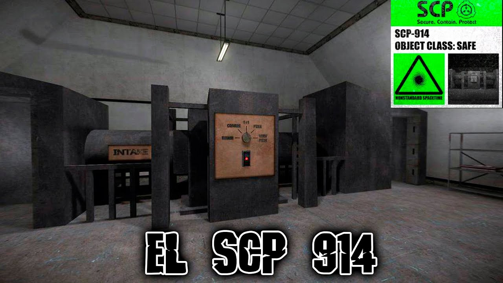

Containment Procedures
SCP-914 is to be contained in a standard secure storage locker at Site-19. The device is to be powered off when not in use for testing. All testing with SCP-914 must be approved by Level 2 personnel or higher and conducted under supervision. Objects processed by SCP-914 are to be monitored for anomalous properties and contained appropriately. In the event of a malfunction, SCP-914 is to be disconnected from power and inspected by qualified technicians.
Description
SCP-914 appears as a large, intricate device approximately 2 meters in height and 1.5 meters in width. It consists of numerous brass gears, screws, springs, and other clockmaking components arranged around a central electrical motor and heating element. The device features an input booth, output booth, and a control panel with five settings: Rough, Coarse, 1:1, Fine, Very Fine. When an object is placed in the input booth and a setting is selected, the device activates for approximately 2 minutes before producing an output in the output booth.
The exact mechanism by which SCP-914 alters objects is unknown, but it appears to follow some form of logical transformation based on the selected setting. Rough tends to degrade or simplify objects, Coarse does so less severely, 1:1 typically produces a similar object, Fine tends to refine or improve objects, and Very Fine often produces highly refined or "idealized" versions of the input.